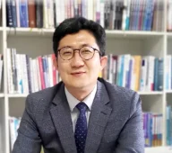
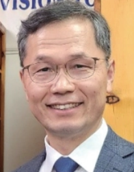
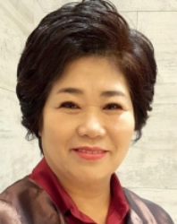
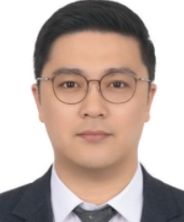
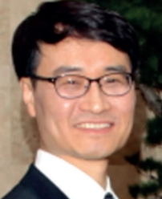
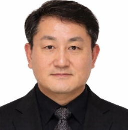
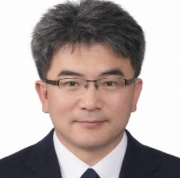

회장
장명희 목사
조암신흥교회 · 예장(통합)
OUR COUNCIL
삼괴지역기독교연합회는 우정읍과 장안면의 교회들이 함께하는 믿음의 공동체입니다.

교파와 규모를 넘어 함께 기도하고,
이웃의 곁에서 지역의 평안을 구합니다.
함께 드리는 수요조찬기도회, 부활절 연합예배, 다음 세대를 위한 장학사업과 지역을 위한 섬김.
삼기연은 작은 만남을 소중히 여기며 교회와 지역을 잇는 길을 걸어갑니다.
제19회기 · 2026년 임원진

조암신흥교회 · 예장(통합)

엘바람교회 · 연합오순절
시은소교회 · 기감

브니엘교회 · 예장(개혁)

운평장로교회 · 예장(합동)

장안제일교회 · 예장(통합)

굳프랜드교회 · 예장(백석)

화성소망교회 · 예장(통합)
증경회장단 김충현 · 이명식 · 최현재 · 류성원 · 김동천 · 한길용 목사
제19회 정기총회 자료집의 회원교회 명단을 바탕으로 안내합니다.
교회 명단을 불러오는 중입니다.